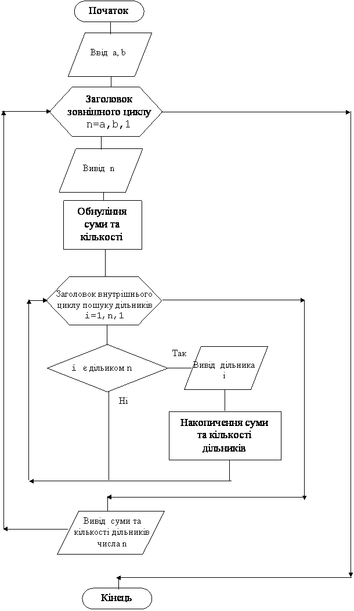

Назад
Зміст
Вперед
Задачі на знаходження дільників натуральних чисел
Число i є дільником натурального числа n, якщо n mod i=0.
У кожного натурального числа n обов’язково є два дільники: 1 та n.
Всі інші дільники натурального числа n (якщо вини є), знаходяться в інтервалі [2, n div 2].
Натуральне число називається простим, якщо у нього немає дільників в інтервалі [2, n div 2].
Щоб знайти всі дільники числа n, потрібно перевірити всі числа i з інтервалу [1, n] на умову n mod i=0. Тобто це буде такий цикл:
for i:=1 to n do if n mod i=0 then...
Щоб перевірити, чи є число n простим, достатньо перевірити на цю умову всі числа з інтервалу [2, n div 2]. Тобто це буде такий цикл:
for i:=2 to n div 2 do if n mod i=0 then...
Приклад 1
Дано натуральне число n. Знайти всі його дільники, їх кількість та суму.
Дано: натуральне число n.
Знайти: Надрукувати його дільники, підрахувати їх кількість та знайти їх суму.
Результати роботи програми
| Ввід | Відповідь | Пояснення |
|---|
| 12 | 1 2 3 4 6 12 6 28 | Вводимо число 12.
Його дільники: 1 2 3 4 6 12.
Кількість дільників –6.
Сума дільників – 28. |
Змінні:
Вхідні:
- n – натуральне число (цілого типу word, бо число натуральне)
Вихідні:
- i – дільники та параметр циклу (цілого типу word)
- k – кількість дільників (цілого типу word)
- s – сума дільників (цілого типу word).
Алгоритм
- Спочатку вводимо натуральне число n.
- Ми будемо знаходити кількість та суму. Тому присвоїмо початкове значення 0 змінним k та s.
- Нам потрібно знайти всі дільники числа n. Вони знаходяться в інтервалі [1, n].
- У циклі for i:=1 to n do будемо знаходити ці дільники. Для кожного i будемо перевіряти умову n mod i=0 и, якщо вона вірна (тобто i є дільником n), то
- Виводимо на екран цей дільник оператором write(i,' ').
- Підраховуємо цей дільник оператором k:=k+1.
- Накопичуємо цей дільник у суму оператором s:=s+i
- Коли цикл закінчиться, виводимо знайдені значення кількості та суми на екран оператором writeln(k,' ',s).
Програма
var n,k,s,i:word;
begin
read(n);
k:=0;s:=0;
for i:=1 to n do
if n mod i=0 then
begin
write(i,' '); k:=k+1; s:=s+i;
end;
writeln(k,' ',s);
end.
|
Приклад 2
Для кожного натурального числа з інтервалу [A,B] знайдіть всі дільники, їх кількість та суму.
Дано: два натуральних числа A та B.
Знайти: Для кожного з чисел A, A+1, A+2,...,B знайти всі дільники, підрахувати їх кількість та знайти їх суму.
Результати роботи програми
| Ввід | Відповідь | Пояснення |
|---|
a=10
b=14 |
дільники числа 10: 1 2 5 10 k=4 s=18
дільники числа 11: 1 11 k=2 s=12
дільники числа 12: 1 2 3 4 6 12 k=6 s=28
дільники числа 13: 1 13 k=2 s=14
дільники числа 14: 1 2 7 14 k=4 s=24
| Вводимо числа 10 та 14.
Для кожного з чисел 10, 11, 12, 13, 14, знаходимо дільники, їх кількість та суму.
Перед дільниками виводимо на екран і само число
|
Змінні:
Вхідні:
- A – ліва границя інтервалу (цілого типу word, бо числа натуральні)
- B – права границя інтервалу (цілого типу word, бо числа натуральні)
Вихідні:
- n – натуральне число з інтервалу [A,B] та параметр зовнішнього циклу (цілого типу word, бо число натуральне)
- i – дільники числа n та параметр внутрішнього циклу (цілого типу word)
- k – кількість дільників числа n (цілого типу word)
- s – сума дільників числа n (цілого типу word).
Алгоритм
- Спочатку вводимо натуральні числа A та B, що є границями інтервалу.
- Для кожного числа n з цього інтервалу ми повинні повністю виконати попередній алгоритм, починаючи з пункту 2. Тому у нас будуть вкладені цикли:
- зовнішній цикл: for n:=a to b do
- перебирає числа n з інтервалу [A,B]
- виводить ці числа на екран write(n)
- для кожного числа n встановлює початкове значення для кількості та суми дільників s:=0;k:=0. Це обов’язково потрібно зробити у зовнішньому циклі, але перед внутрішнім.
- внутрішній цикл for i:=1 to n do if n mod i=0 then для кожного числа n знаходить дільники та:
- Виводить на екран цей дільник оператором write(i,' ').
- Підраховує цей дільник оператором k:=k+1.
- Накопичує цей дільник у суму оператором s:=s+i
- Коли внутрішній цикл закінчиться, виводимо знайдені значення кількості та суми для даного числа n на екран оператором writeln(k,' ',s) та переходимо на наступний виток зовнішнього циклу для обробки наступного числа.
Блок–схема програми

Програма
var a,b,n,i,k,s:word;
begin
write(a=');read(a);
write('b=');read(b);
for n:=a to b do
begin
write(дільники числа ',n,': ');
s:=0;k:=0;
for i:=1 to n do
if n mod i=0 then
begin
write(i,' ');
k:=k+1; s:=s+i;
end;
writeln(' k=',k,' s=',s);
end;
end.
|
Приклад 3
Для кожного з чисел з інтервалу від 300 до 400 знайти суму дільників. Вивести на екран числа у яких сума дільників кратна 10 а також саму суму дільників.
Знайти: Для кожного з чисел 300, 301, 302,...,400 додати всі дільники, і, якщо сума буде кратна 10, то вивести на екран число та знайдену суму.
Результати роботи програми
| Відповідь | Пояснення |
|---|
n=304 s=620 n=312 s=840
n=316 s=560 n=319 s=360
n=323 s=360 n=327 s=440
n=328 s=630 n=342 s=780
n=343 s=400 n=344 s=660
n=348 s=840 n=349 s=350
n=351 s=560 n=354 s=720
n=356 s=630 n=358 s=540
n=359 s=360 n=360 s=1170
n=376 s=720 n=377 s=420
n=378 s=960 n=379 s=380
n=380 s=840 n=384 s=1020
n=389 s=390 n=395 s=480
n=398 s=600 n=399 s=640
| В програму нічого не вводиться. Числа у відповіді мають коментарі: спочатку виводиться число n, а потім сума його дільників s.
|
Змінні:
Вхідних даних немає.
Вихідні:
- n – натуральне число з інтервалу [300,400] та параметр зовнішнього циклу (цілого типу word, бо число натуральне)
- i – дільники числа n та параметр внутрішнього циклу (цілого типу word)
- s – сума дільників числа n (цілого типу word).
Алгоритм
- Так же як і у попередньому прикладі, у нас будуть вкладені цикли:
- зовнішній цикл: for n:=300 to 400 do
- перебирає числа n з інтервалу [300,400]
- для кожного числа n встановлює початкове значення для суми дільників s:=0.
- внутрішній цикл for i:=1 to n do if n mod i=0 then для кожного числа n знаходить суму дільників s:=s+i
- Коли внутрішній цикл закінчиться, перевіряємо знайдену суму s і, якщо вона кратна 10 (s mod 10=0), то виводимо на екран число n та знайдену суму оператором write('n=',n,'s=',s) та переходимо на наступний виток зовнішнього циклу для обробки наступного числа.
Програма
var n,i,s:word;
begin
for n:=300 to 400 do
begin
s:=0;
for i:=1 to n do
if n mod i=0 then s:=s+i;
if s mod 10=0 then
write(' n=',n,' s=',s);
end;
end.
|
Приклад 4
Дано натуральне число n. Чи воно просте?
Дано: натуральне число n.
Знайти: З’ясувати, чи є у числа дільники у інтервалі [2, n div 2].
Результати роботи програми
| Ввід | Відповідь | Пояснення |
|---|
| 12 | No | У числа 12 в інтервалі [2,6] є дільники: 2, 3, 4, 6. Тому число не є простим. |
| 17 | Yes | У числа 17 в інтервалі [2,8] немає дільників. Тому число є простим. |
Змінні:
Вхідні:
- n – натуральне число (цілого типу word, бо число натуральне)
Вихідні:
- p – ознака наявності дільників (логічного типу, p=false немає дільників, p=true є дільники )
Проміжні:
- i – дільники та параметр циклу (цілого типу word)
Алгоритм
- Спочатку вводимо натуральне число n.
- Ми будемо використовувати алгоритм з ознакою. Тому присвоїмо початкове значення ознаці p:=false. Тобто вважаємо, що дільників немає.
- Тепер у циклі for i:=2 to n div 2 do будемо шукати дільники. Для кожного i будемо перевіряти умову n mod i=0 и, якщо вона вірна (тобто i є дільником n), то установимо значення ознаки p:=true.
- Коли цикл закінчиться, то перевіримо значення ознаки:
- Якщо p=false, то дільників немає, число просте, відповідь 'yes'.
- Якщо p=true, то є дільники, число не просте, відповідь 'no'.
Програма
var n,i: word; P:boolean;
begin
read(n);p:=false;
for i:=2 to n div 2 do
if n mod i=0 then p:=true;
if not p then writeln('yes')
else writeln('no');
end.
|
Приклад 5
Знайдіть в інтервалі [A,B] всі прості числа
Дано: два натуральних числа A та B.
Знайти: Для кожного з чисел A, A+1, A+2,...,B з’ясувати, чиє воно простим. Якщо число просте, то вивести його на екран.
Результати роботи програми
| Ввід | Відповідь | Пояснення |
|---|
| 10 14 | 11 13 |
Вводимо числа 10 та 14.
Для кожного з чисел 10, 11, 12, 13, 14, шукаємо дільники в інтервалі [2,n div 2].
У числа 10 в інтервалі [2,5] є дільники 2 та 5, тобто число не просте.
У числа 11 в інтервалі [2,5] немає дільників, тобто число просте і тому виводиться на екран.
У числа 12 в інтервалі [2,6] є дільники 2, 3, 4 та 6, тобто число не просте.
У числа 13 в інтервалі [2,6] немає дільників, тобто число просте і тому виводиться на екран.
У числа 14 в інтервалі [2,7] є дільники 2 та 7, тобто число не просте.
|
Змінні:
Вхідні:
- A – ліва границя інтервалу (цілого типу word, бо числа натуральні)
- B – права границя інтервалу (цілого типу word, бо числа натуральні)
Вихідні:
- p – ознака наявності дільників (логічного типу, p=false немає дільників, p=true є дільники )
Проміжні:
- n – натуральне число з інтервалу [A,B] та параметр зовнішнього циклу (цілого типу word, бо число натуральне)
- i – дільники числа n та параметр внутрішнього циклу (цілого типу word)
Алгоритм
- Спочатку вводимо натуральні числа A та B, що є границями інтервалу.
- Для кожного числа n з цього інтервалу ми повинні повністю виконати попередній алгоритм, починаючи з пункту 2. Тому у нас будуть вкладені цикли:
- зовнішній цикл: for n:=a to b do
- перебирає числа n з інтервалу [A,B]
- присвоює початкове значення ознаці p:=false. Тобто вважаємо, що дільників у числа n немає. Це обов’язково потрібно зробити у зовнішньому циклі, але перед внутрішнім.
- У внутрішньому циклі for i:=2 to n div 2 do будемо шукати дільники числа n. Для кожного i будемо перевіряти умову n mod i=0 и, якщо вона вірна (тобто i є дільником n), то установимо значення ознаки p:=true.
- Коли внутрішній цикл закінчиться, то перевіримо значення ознаки:
- якщо p=false, то дільників немає, число n просте і тому виводиться на екран оператором write(n,' '), а потім виконується перехід на наступний виток зовнішнього циклу для обробки наступного числа.
- якщо p=true, то є дільники, число не просте, число не виводиться, виконується перехід на наступний виток зовнішнього циклу для обробки наступного числа.
Програма
var n,i,a,b: word; P:boolean;
begin
read(a,b);
for n:=a to b do
begin
p:=false;
for i:=2 to n div 2 do
if n mod i=0 then p:=true;
if not p then write(n,' ');
end;
end.
|
Варіанти задач
- Дано натуральне число n. Вивести на екран всі його парні дільники.
- Дано натуральне число n. Знайти суму його непарних дільників.
- Дано натуральне число n. Знайти кількість його парних дільників.
- Для кожного цілого числа з інтервалу [10,15] знайдіть всі непарні дільники.
- Дано натуральне число n. Надрукуйте його дільники та знайдіть середнє арифметичне його парних дільників.
- Знайдіть всі прості трьохзначні числа.
- Надрукуйте всі трьохзначні паліндроми , що є простими числами.
- В інтервалі [A,B] знайдіть кількість простих чисел.
- Для кожного цілого числа з інтервалу [30,36] знайдіть кількість його парних дільників.
- Для кожного цілого числа з інтервалу [15,20] знайдіть суму його непарних дільників.
- Знайдіть суму непарних дільників для кожного з цілих чисел від 50 до 70.
- Для кожного цілого числа з інтервалу [16,24] знайдіть середнє арифметичне його парних дільників.
- Для кожного цілого числа з інтервалу [120;140] знайдіть всі непарні дільники та їх кількість.
- Для кожного цілого числа з інтервалу [A,B] знайдіть кількість його парних дільників.
- Для кожного цілого числа з інтервалу [A,B] знайдіть всі його дільники, що кратні 3.
- З інтервалу [15,25] виведіть на екран числа, у яких 4 дільники.
Назад
Зміст
Вперед